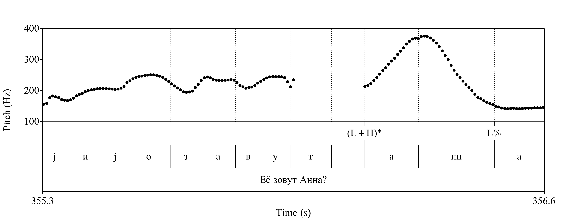
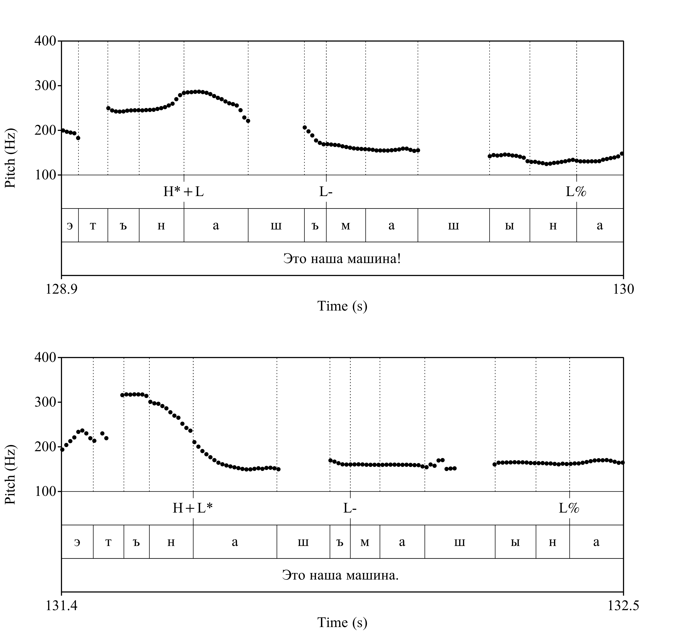
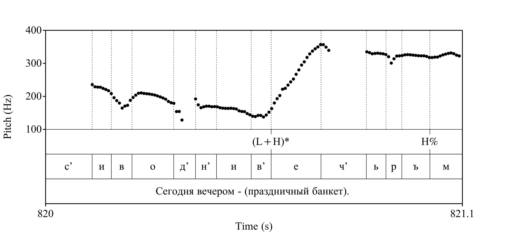
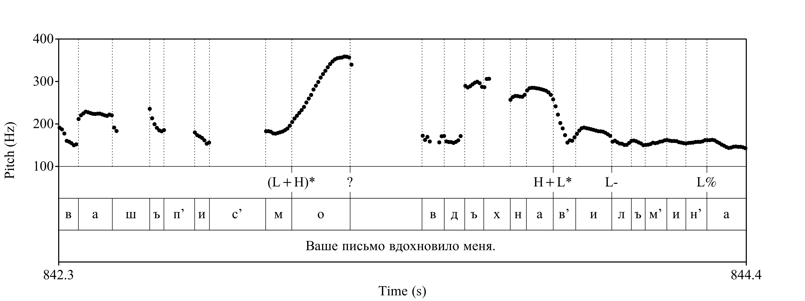
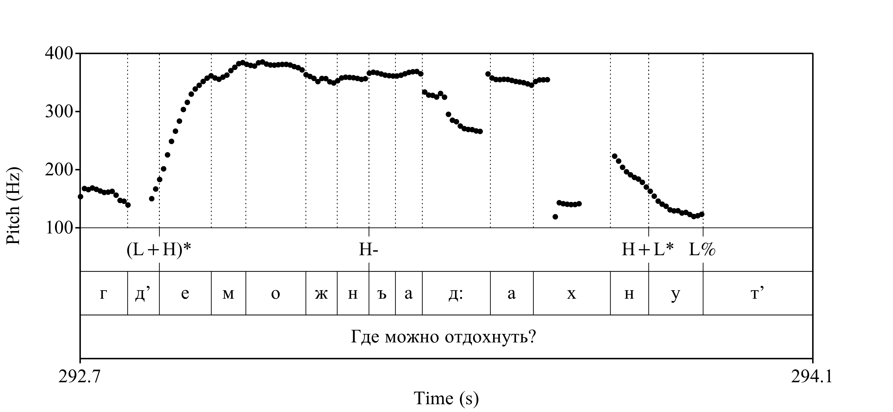

| нотация Е. А. Брызгуновой | автосегментно-метрическая нотация |
|---|---|
| ИК-1: | (%H) H+L* (L-) L% |
| ИК-2: | (%L) H*+L (L-) L% |
| ИК-3: | (%L) [LH]* (L-) L% |
| ИК-4: | (%H) H+L* (H-) H% |
| ИК-5: | (%L) [LH]* H- !H*+L1 L% |
| (ИК-5): | (%L) [LH]* H- H+L* L% |
| ИК-6: | (%L) [LH]* (H-) H% |
Литературный язык (говор 00)
Стандартным способом описания эталонной литературной интонации русского языка является модель интонационных конструкций (ИК) (Брызгунова 1963, 1980, 1981), имевшая основной целью преподавание русского языка как иностранного и ориентированная поэтому на тщательное дикторское произношение. Мы предлагаем следующее соотношение ИК и принятой в настоящем ресурсе автосегментно-метрической нотации (в скобках — несмыслоразличительные элементы):
Звуковые примеры, иллюстрирующие этот материал, отобраны из работы (Брызгунова 1981). Особого замечания требует интерпретация вопросов с вопросительным словом, оформленные похожим на шляпу контуром, которые в сложившейся в русистике традиции относятся обычно к ИК-5 (Дурягин 2021: 140, 152, 159). В действительности же этот мелодический контур практически неотличим от ИК-1, поскольку конечный тональный акцент обычно имеет в нем вид H+L*, а не H*+L, как это предполагается для прототипической ИК-5 (Брызгунова 1981: 78). Мы лишь по традиции относим здесь этот контур к ИК-5, заключая его обозначение в таблице данных в круглые скобки.
Тональные акценты (pitch accents)
 - (L+H)* (восходящий): Восходящее движение тона на всем ударном слоге, тональный максимум может достигаться в инициали первого заударного слога. (ИК-3)

(H+)L*(нисходящий): Нисходящее движение тона на согласном инициали, завершающееся в начальной части ударного гласного. (ИК-1)H*+L(нисходящий): Нисходящее движение тона на всем ударном гласном или большей его части. (ИК-2)
Конечные пограничные тоны (final boundary tones)
L%(низкий): Низкий тон на конечном слоге во фразе. (ИК-3)

H%(высокий): Высокий тон на конечном слоге во фразе. (ИК-6)

0(трункация): Нулевая реализация пограничного тона при отсутствии заакцентных слогов (ИК-3 // ИК-6)
Фразовый тон (phrase accent)

H-: Ровный высокий тон на всех заакцентных слогах кроме последнего (реже - последнего и предпоследнего) во фразе. (ИК-5)
L-: Ровный низкий тон на всех заакцентных слогах. В транскрипции обычно не отмечается.
Псковский (Говор 1)
Говор деревень Дарьино, Логовино и Котельно Островского района Псковской области относится к Псковской группе западных среднерусских говоров. В говоре пятифонемный ударный вокализм, недиссимилятивное аканье и сильное яканье.
Ритмика слова предполагает выраженную (хотя и не настолько, как, например, во Владимирско-Поволжских говорах) двухступенчатость редукции гласных первого и второго предударных слогов при среднем темпе речи. По классификации С.С. Высотского эти говоры относятся к X группе и имеют следующее соотношение длительностей предударных и ударных гласных: 78 мс (гласный второго предударного слога) — 96 мс (гласный первого предударного слога) — 120 мс (гласный ударного слога) (Высотский 1973: 36-38).
Основной особенностью фонетической реализации мелодического контура общего вопроса в говоре является возможность сверхраннего тайминга восходящего тонального акцента. Мелодический контур в целом имеет вид %L (L+)H* (L-) L%. Как и в общем вопросе, при оформлении незавершенности наиболее частотным вариантом восходящего тонального акцента является H*, почти столь же часто встречается (L+)H*, реже всего — L+H*. Конечный пограничный тон может быть как низким (в сочетании со всеми этими типами), так и высоким (обычно после акцента (L+)H*).
Нейтральные утверждения с широким фокусом оформляются типичным для (юго-)западных говоров мелодическим контуром %H L* L: фраза начинается с высокого (фонетически — иногда сверхвысокого) пограничного тона (%Н), после чего сразу следует резкое падение до низкого (L*), затем ЧОТ сохраняется на низком уровне до самого конца фразы (L%).
Ненейтральные утверждения с широким фокусом характеризуются такой же начальной частью: фраза начинается с высокого пограничного тона (%Н), после чего сразу следует резкое падение до низкого, затем во второй части ударного гласного начинается повышение ЧОТ, продолжающееся обычно в инициали заударного слога (тональный акцент L*+H), далее происходит понижение тона, и на конечном слоге во фразе он низкий (L%). Этот контур — %H L*+H L% — весьма сходен c соответствующим восточным севернорусским L*(+H) H- L% (Князев 2023d), но отличается от него отсутствием высокого тонального плато после повышения тона (H-): в псковском говоре падение ЧОТ происходит сразу.
Утверждение с узким фокусом может быть оформлено тремя вариантами “нисходящего” тонального акцента:
- ровный высокий тон на протяжении большей части ударного гласного словоформы-акцентоносителя
(H*), который мы считаем для говора исходным; - акцент, совмещающий в себе ровный высокий тон в начале и понижение ЧОТ во второй части гласного —
H*(+L); - собственно нисходящее движение тона на всем протяжении ударного гласного, как в литературном языке —
H*+L.
В отношении частотности этих типов можно сказать, что первые два (не всегда отчетливо различимые) существенно преобладают над последним.
В оформлении специального вопроса представлены четыре варианта “нисходящего” тонального акцента — те же три, что и в утверждениях с узким фокусом, плюс еще один — с понижением ЧОТ, начинающимся еще до начала ударного гласного и заканчивающимся до его окончания: H+L* (использование такого варианта в этой функции в псковском говоре возможно в силу того, что в нем этот акцент не используется при оформлении утверждений с широким фокусом). В подавляющем большинстве случаев словоформой-акцентоносителем в островском говоре является вопросительное слово, и причем только оно.
Образец
И уже вот первая девочка родилася — в меня, и год отжили мы с ребёнком, но спаси Бог таких ребят, как в меня была внучка. Вы знаете, в ёй никогда рот не закрывался. И плаче, бывало, и плаче, и Лариса и тое, и другое: и сиську, и кашу — кричит гвалту, и всё. И по бабкам яну, и по больницам, а потом успокоилась и успокоилась. Ой, была яна сумасшедша.
А яна сама с Ленинграду, с Сиверского. И вышла в деревню, ну как ты думаешь? Я и говорила: “Толик, ну, она тебе не жёнка, яна городская, она не понимае никого делать по-деревенскому!” А яна там работала в больнице медсестрой, и бросила, и приехала.
Роговатка (Говор 2)
Говор с. Роговатое Старооскольского района Белгородской области принадлежит к Оскольским межзональным говорам типа Б южнорусского наречия.
Этот идиом достаточно хорошо изучен, его описанию посвящена обширная литература, существует звучащий корпус роговатовского говора.
В отношении системы гласных говор характеризуется архаическим диссимилятивным аканьем и архаическим диссимилятивным яканьем “умеренного” задонского типа, при котором перед ударными гласными среднего и нижнего подъёмов предударные гласные, реализующие фонемы неверхнего подъёма, совпадают в и-образном звуке перед последующим мягким согласным и в е-образном звуке перед последующим твёрдым согласным.
В отношении ритмической структуры в говоре наблюдается два типа случаев: 1) с гласным [а] в первом предударном слоге и гласными верхнего и верхне-среднего подъёма под ударением, 2) с гласным не-а в первом предударном слоге и гласными среднего и нижнего подъёма под ударением. В первом случае отмечается заметная двухступенчатость редукции гласных первого и второго предударных слогов, “гласный второго предударного слога не склонен к сильному сокращению, но сохраняет тембр редуцированного” (Высотский 1973: 36-37). Во втором случае двухступенчатость редукции также выражена, однако длительность первого предударного слога существенно меньше, чем в первом случае, она примерно соответствует длительности гласных верхнего подъёма в этой же позиции, однако превышает длительность редуцированных гласных во втором предударном слоге. Темп речи в таких говорах средний. По классификации С.С. Высотского подобные говоры относятся к XII и XIII группам и имеют, соответственно, следующее соотношение длительностей предударных и ударных гласных: 1) 58 мс (гласный второго предударного слога) — 113 мс (гласный первого предударного слога) — 123 мс (гласный ударного слога), 2) 43 мс (гласный второго предударного слога) — 70 мс (гласный первого предударного слога) — 120 мс (гласный ударного слога) (Высотский 1973: 38).
Основным отличием просодической системы южнорусского говора от литературной русской является ее ориентация на использование преимущественно ровных (уровневых) тонов, а не контурных (скользящих), составляющих ядро интонационной системы литературного языка. Просодическое оформление в говоре таких коммуникативных категорий, как утверждение, общий вопрос, вопрос с вопросительным словом, вокатив, императив и переспрос, может быть описано с использованием двух монотональных акцентов — Н* и L*. Кроме того, мы постулируем в говоре Роговатки два конечных пограничных тона (H% и L%), каждый из которых может сочетаться с любым из двух тональных акцентов. При этом фактов, позволяющих утверждать существование фонологического противопоставления разных фразовых тонов (Н- и L-), в ходе анализа не обнаружено. Одной из важнейщих особенностей фразовой просодии Роговатого является редкое в типологическом отношении противопоставление двух типов начальных пограничных тонов — %Н и %L.
Подробнее смотрите (Букринская et al. 2014; Высотский 1973; Дьяченко 2016, 2021a, 2013, 2021b, 2015, 2021c, 2014, 2017; Дьяченко et al. 2013, 2019, 2017; Дьяченко, Тер-Аванесова 2018; Князев 2024a; Тер-Аванесова 2015, 2011; Тер-Аванесова, Дьяченко 2021; Тер-Аванесова et al. 2018)
Образец
Да, роддом был, и вот близко, и мы жили же бли= ближе туды. Они вот далёко, а мы там это последняя улица, Гусиновка она называлась, щас Садовая. И мы на последнем на этом улице, и близко этот. И вот они приедут тогда к нам, эта хата маленькая. У нас уво всех тогда были хаты маленькие, соломою крытые, деревянные, полов не было. Это после войны вот эта Роговатка вся построилась, начали картохи возить у Донбасс, и с этих с картох поднялась наша село постройками, а то уво всех были хаты, у кого ж вот так пер= перехилилася, у кого как. Ну, и хата и у них была маленькая. Они ко мне приедут, придут, придут пешком, кто это тогда возил, машин не было, а лошадей у колхозе тож не давали. Придут ко мне, и придут на Сергова день, Сергова день осенью, восьмого октября, а на Святой уйдут, когда вот Паска, а это живут.
Ну и жили у мене, ну и нач= па= это, рожать усходилась она, Нюрка. “Нюрка, да что ты?” “Ой, чтой-т, мам, не так”. “Ну, надо тобе, навер=, тебе, наверно, надо в больницу, давай скорее собирать тебе”. Собираем, собрали, он ей под руку, повёл. Я ещё пока шмутья свои собираю. Дошли до последнего двора чуть Гусиновки, она говорит: “Я рожаю”. А он говорит: “Ой, погоди хоть, вон тёща за машиною побегла”. А там контора тож была недалёко. “Вон там машины стоя, щас тёща машину подгоне”. “Не, это, рожаю”. А он кричит: “Погоди”. Ну.
Климовское (Говор 3)
К числу наиболее ярких особенностей фразовой просодии в говоре села Климовского Коношского района Архангельской области относятся:
- оформление общего вопроса тональным контуром с восходящим тональным акцентом и низким пограничным тоном без фразового тона
(L+H* L%), что отличает его как от северо-восточных архангельских, которым свойственен высокий фразовый тон(L+H* Н- L%), так и от литературного русского языка (низкий фразовый тон,L+H* L- L%); - высокий начальный пограничный тон (
%Н) в утвердительных предложениях; - ровный высокий тон (
Н*) предъядерных тональных акцентов; - наличие даунстепа — понижения тонального уровня на каждом последующем предъядерном тональном акценте (
!Н*); - оформление незавершенности высказывания при помощи высокого конечного пограничного тона (
Н%), который также может быть реализован с даунстепом (!Н%).
Подробнее смотрите (Князев 2023a)
Селигеро-Торжковский (Говор 4)
Говор с. Ильинское относится к Селигеро-Торжковским западным среднерусским акающим говорам.
Говор характеризуется пятифонемным ударным вокализмом и недиссимилятивным аканьем, у части информантов отмечено еканье, у другой части — иканье. Селигеро-Торжковские говоры весьма неоднородны, в частности, по характеру безударного вокализма, который может быть представлен различными типами яканья, еканьем или иканьем (Захарова et al. 1970: 414). Встречаются и более сложно устроенные системы предударного вокализма. Так, говор д. Лужниково Вышневолоцкого района, расположенной западнее Ильинского, характеризуется переходным типом вокализма: у части информантов наблюдается различение, с одной стороны, фонемы /а/, с другой — фонем /е/ и /о/, у другой части информантов — ассимилятивно-диссимилятивное яканье култуковского типа, однако все информанты демонстрируют неустойчивость системы предударных гласных и большую вариативность гласных в первом предударном слоге (Малышева, Тер-Аванесова 2020: 231-239).
С точки зрения ритмической структуры слова Селигеро-Торжковские говоры относятся к группе VII по классификации С.С. Высотского. Типологической особенностью этой группы является заметная двухступенчатость редукции безударных гласных, при которой, однако, хотя просодическое ядро существенно выделяется в отношении длительности гласных, гласные 2-го предударного слога не склонны к сильному сокращению (как, например, в говорах Владимирско-Поволжской группы), а соотношение длительностей гласных второго предударного — первого предударного и ударного слогов составляет 70 мс — 125 мс — 151 мс (Высотский 1973: 35-38).
Важной особенностью фонетической реализации мелодического контура общего вопроса в говоре является отмечаемая в речи самых старших информантов возможность сверхраннего тайминга восходящего тонального акцента. В целом, оформление общего вопроса в архаическом слое вышневолоцкого говора очень сходно с псковским. Самым частым в нем также является вариант H*. При этом акцент (L+)H* (без падения на ударном гласном) встречается относительно реже, чем в псковском говоре, а акцент L+H* — гораздо чаще. Таким образом, в говоре происходит перестройка мелодического контура общего вопроса: тональный максимум восходящего акцента смещается от начала ударного гласного акцентоносителя к его середине (по всей видимости — под влиянием литературного языка, в котором восходящее движение характеризуется максимально поздним таймингом): %L H* L- L% —> %L L+H* L- L%.
При оформлении незавершенности наблюдается в целом та же картина, что и в псковском говор 1: используются те же три варианта восходящего тонального акцента — H*, (L+)H*, L+H*, но с преобладанием типа (L+)H*. Конечный пограничный тон может быть низким (в сочетании со всеми вариантами) или высоким (обычно после акцента (L+)H*, чаще всего при перечислении).
Просодическое оформление нейтральных утверждений с широким фокусом характеризуется отсутствием немедленного (на первых двух-трех слогах фразы) падения тона, наоборот, тон этот, начавшись на среднем уровне, сохраняется до ударного слога словоформы-акцентоносителя, где и происходит понижение ЧОТ, основная часть которого может приходиться на согласный инициали ударного слога, но в любом случае заканчивается до окончания ударного гласного, в заключительной части которого обычно наблюдается участок с ровным низким тоном. На этом основании мы интерпретируем такой тип тонального движения как нисходящий акцент с ранним таймингом — H+L*. В дальнейшем тон сохраняется ровным на низком уровне до последнего слога фразы (L%). Таким образом, весь контур имеет вид H+L* L%, как в литературном языке. В случае ненейтрального утверждения за тем же тональным акцентом H+L* следует не низкий пограничный тон (L%), а восходящий (LH%); причем повышение ЧОТ ассоциировано обычно с самым последним слогом фразы2.
Утверждение с узким фокусом оформляется тремя вариантами “нисходящего” тонального акцента: H*; H*(+L); H*+L. В отличие от псковского говора, здесь, однако, уже преобладает последний, “литературный” тип с понижением тона на всем протяжении ударного гласного словоформы-акцентоносителя.
Для оформления вопроса с вопросительным словом используются те же три варианта “нисходящего” тонального акцента, что и в утверждениях с узким фокусом. Среди этих вариантов с одним тональным акцентом количественно в вышневолоцком говоре явно преобладают первые два. Едва ли не более распространеным типом просодического оформления частного вопроса является вариант с двумя тональными акцентами, второй из которых обычно реализуется с даунстепом (!). Сами тональные акценты в большинстве таких случаев являются нисходящими H*+L, однако достаточно регулярно встречаются и реализации с ровным высоким H* — в качестве только первого или (гораздо реже) и первого, и второго. Легко видеть, что эта конструкция весьма сходна с ИК-5 литературного языка, но принципиально отличается от нее типом первого акцента: в СРЛЯ он восходящий, в Ильинском — нисходящий (или ровный высокий).
Таким образом, в говоре наблюдается эволюция системы тональных акцентов, заключающаяся в постепенном переходе от собственно диалектных уровневых H* и L* к контурным (нисходящим и восходящим), свойственным литературному языку, причем на этом пути селигеро-торжковский говор продвинулся существенно дальше псковского.
Подробнее смотрите (Высотский 1973; Захарова et al. 1970; Князев, Дьяченко 2023a; Малышева, Тер-Аванесова 2020).
Образец
Ну, как, на лошадях каталися, лошадей разукра=, лошадей же раньше было много, это щас у нас нету. У меня даже брат ходил за лошадьми, и конюшня была. И вот он чё-то, где-то был уехадши он. Мамка послала меня, я в школу ж ходила ещё. А там жеребец был большой, здоровый, конюшня вот там стояла, ой. А их порядочно было, она придёшь, дверьку откроешь, они выйдут, в дощан такой большой напьются. Ты пока сено положи туда. Батюшки! Я выпустила жеребца, а он обратно. Я с горем пополам выскочила, в ноги кинула ему сено, испугалася — ну, небольшая.
Интервьюер: А что такое дощан?
Это деревянные такие большие чаны, высокие, в них наливали воду. Привозили в этих, дровни, в дровнях там бочка, и возили с колодцев воду, туда наливали. Лошадь, она любит воду только чистую, она не будет ни в грязном ведре пить, ни в каком. Как бы она пить ни хотела, она не будет пить. Всё время надо в чистом её поить. И вот и выпускали, всё, и сено клали.
Архангельские говоры к северо-востоку от Северной Двины (Говоры 5, 51, 52, 53, 532, 54, 55, 56)
Образцы из “северо-восточных” архангельских говоров (Вадюга, Кеба, Мосеево, Веегора, Нюхча, Ваймуша) отобраны из соответствующих диалектных корпусов:
- Корпус говоров бассейна Верхней Пинеги и Выи (Князев 2021a)
- Корпус говора села Кеба (Князев 2022b)
- Корпус говора Средней Пёзы (Князев 2022d)
- Корпус говора деревни Веегора (Князев 2022a)
- Корпус говоров Средней Пинеги (Князев 2023c)
Там же см. подробнее об этих говорах.
Спецификой фразовой просодии этих идиомов является 1) оформление общего вопроса восходящим тональным акцентом с задержкой падения тона до конечного во фразе слога — высоким фразовым тоном (L*+H H- L% или L+H* H- L%) (Post 2008; Князев 2022e); 2) оформление специального вопроса высоким тональным акцентом Н* (Князев 2022e); 3) оформление утвердительных ответных диалогических реплик мелодическим контуром с низким тональным акцентом, высоким фразовым тоном и низким конечным пограничным L* H- L% (Князев 2023e); 4) особый тип просодического членения высказывания (Князев 2023e).
К этим говорам во многом примыкают и идиомы дд. Сельцо и Тимошино (см. Корпус говоров среднего течения Северной Двины (Князев 2023b))
Подробнее смотрите (Князев 2022e, 2022f, 2023d, 2023e; Post 2008).
Образец
И робила и, и ишь вот какие медали заробила, дак мене дали отрез на пальто, ездила в Карпу на собранье, да дали катанцы первый сорт, да дали сапоги, это работала, ак за работу, да шести месяцей дали два= два телёнка. Да масла колько давали, я всё перевыполняла молоко-то.
Вот, и всё вручную, и всё, а старалась, детей нету, дак всё трушничала ходила вот корм-то.
Где молотили, да всё запахиваю веником да волочу да кормлю коров-то. Не ленилась.
Иные ведь и не хотят это делать, а я вот санки возьму да, на= там корзину какую поставлю да, на г= на=веником назапахиваю зернят да, тут соломы-то всякой, принесу, подам, ведь худо кормили, ещё вичками кормили, корму-то не было да, ишь-ко ты.
А я уж не жалела свои силы, и не жалела ничего, и дома истоплено, ак истоплено, а не истопленно — ладно, нету никого дак.
Церковное (Говор 52)
Говор относится к юго-западной диалектной зоне Архангельских говоров (Гецова 1997). Его описание см. в (Князев 2022c).
Говор характеризуется наличием “пословного” мелодического контура с преобладанием нисходящих тональных акцентов и использованием высокого (фонетически среднего) пограничного тона для оформления незавершенности (Князев 2021b), нестандартным типом просодического членения высказывания (Князев 2023d).
Подробнее смотрите (Гецова 1997; Князев 2022c, 2021b, 2023d)
Образец
А пото́м бы́ли цесы́ буди́льник, в шкапу́, бы́ли цесы́-ти ходи́ли, был заво́д-от не вы́шел, а мы небольши́ма-то бе́гали, тут был кре́стик, там-от на дере́вне-то стоя́л, на уго́рышки, мы круго́м э́того кре́стика бе́гали, па́лоцьку-воро́воцьку закола́цивали, па́лоцька воро́воцька, не ко́вана голо́воцька, кто украдё́т, тому́ ру́ки сволокё́т, вот э́то, и-и-и побежа́т всё пря́тацце.
А тут стоя́ло два онба́ра, от таки́ вме́сте, а под онба́ром там бы́ло подмы́ло э́ко, мно́го туды́ ле́зали мы, пря́талися, я туда́ зале́зла под онба́р-от, а там цесы́-ти тик-тик, тик-тик, тик!
Ох, чё́ртушка там вот тикти́кат, как вы́скоцила отту́да да, ребя́та, говорю́, под онба́ром да как цесы́ хо́дят, говорю́, там цё́ртушка ле кто ле э́к ведь там как цесы́ хо́дят.
А ребя́т тоɣда́ мно́го бы́ло а-а-а-а, бе́гают, побежа́ли, и я побежа́ла, раз побежа́ли, дак нехто́ там не лез, дак и я не поле́зла бо́льше.
Горка (Говор 59)
Примеры из д. Горка Верхнетоемского района Архангельской области иллюстрируют, в первую очередь, типичную для пинежских говоров модель просодической организации фразы L*+H H- (nH*) L%: 1) на выделенном (обычно первом знаменательном) слове интонационной фразы — повышение ЧОТ после непродолжительного участка ровного низкого тона, которое обычно завершается на заударном слоге; 2) ровный высокий тон на последующих словах (с тональными акцентами H* в случае их наличия или фразовым тоном H- в случае отсутствия); 3) низкий конечный пограничный тон (L%), причем падение ЧОТ происходит после последнего ударного гласного во фразе. Этот способ оформления свойственен как вопросительным, так и утвердительным (с широким фокусом) высказываниям; мы, однако, разграничиваем их как 1) L*+H H- L% (вопрос) и 2) L*(+H) H- L% (утверждение) в силу наличия между ними фонологического различия и связанных с ним некоторых фонетических отличий: большая продолжительность начального участка с низким ровным тоном (в редких случаях — почти на всей протяженности гласного) и меньший интервал повышения ЧОТ в последнем случае. Вопрос с вопросительным словом (и утверждение с узким фокусом) маркируется в говоре тональным акцентом H* или комбинацией H* H- H* (ровный высокий тон на вопросительном слове и том слове, к которому относится вопрос).
Особую ценность приведенным примерам придает тот факт, что записаны они были в 1968 г. Е. А. Нефедовой во время диалектологической экспедиции МГУ. Мы от души благодарим Е. А. Нефедову, профессора филологического факультета МГУ, заведующую кабинетом диалектологии, за разрешение использовать эти записи в нашем корпусе.
Диктор МО родилась в д. Великая в 10 км ниже Горки и в 10 км выше Вадюги (см. Говор 5) по течению Пинеги.
Новгородский (Говор 6)
Говор деревень Ильмень, Хотяж и Курицко Новгородского района Новгородской области относится к Новгородской группе западных среднерусских окающих говоров. Он характеризуется неполным оканьем, при котором в первом предударном слоге после твёрдых согласных фонемы /а/ и /о/ различаются, а в других безударных слогах совпадают, как правило, в звуке [ъ] (в конечном открытом слоге перед паузой — чаще в [а]). После мягких согласных в первом предударном слоге также наблюдается различение /а/, /о/, /е/ и /и/, однако /о/ и /е/ могут совпадать в е-образном звуке, в других безударных слогах /а/, /о/ и /е/ нейтрализуются в и-образном звуке (но в конечном открытом слоге /а/ обычно представлена а-образным звуком, а /о/ и /е/ — е-образным).
Специфика интонационного оформления фразы, а также место размещения тонального акцента (тайминг) связаны с устройством ритмической структуры слова. В отношении ритмической структуры новгородские говоры при среднем темпе речи характеризуются достаточно выраженной двухступенчатостью признаков безударности: первый предударный слог значительно более долгий, чем другие безударные, хотя этот контраст выражен гораздо меньше, чем во владимирских говорах и литературном русском языке (Высотский 1973: 35—36).
Просодическая система говора весьма сходна с литературной как в отношении набора фонологических тональных средств, так и в плане их использования для оформления базовых коммуникативных категорий — общего и частного вопроса, утверждения, незавершенности, императива. Как и в литературном языке, мы постулируем в ней три тональных акцента — восходящий, нисходящий и низкий, а также два базовых конечных пограничных тона — высокий и низкий. Фонологические различия между начальными пограничными тонами и фразовыми тонами, по-видимому, отсутствуют. При этом основные различия между говором и литературным языком заключаются в фонетической реализации тональных акцентов и их употреблении: 1) восходящий тональный акцент (L+H*) характеризуется более ранним таймингом достижения тонального максимума — в середине, а не в конце ударного слога; 2) наоборот, тайминг нисходящего тонального акцента (H*+L) является более поздним: начало падения тона приходится на середину, а не начало ударного гласного, причем понижению предшествует повышение на самóм ударном, а не на предударном гласном, что объясняется отличием ритмической структуры слова говора от литературной; 3) утвердительные предложения как с узким, так и с широким фокусом в говоре в подавляющем большинстве случаев оформляются при помощи нисходящего акцента H*+L; акцент L* используется преимущественно в составе мелодического контура с высоким конечным пограничным тоном.
Подробнее смотрите (Высотский 1973; Князев, Дьяченко 2023b)
Образец
Да, видать, она по= как по озеру. Ой! Я татой звала, не папа, а тата. Он: “Я не папа, не барин, зови меня татой, и всё”. Тата. “Тат, от смотри рыба как идёт, артель!” Он говори: “О, артель!” Прыве= плыве эта мелкая, например, вот экая плотва. Она такая толстая, и она плывёт, как этим. Вот так интересно было на озере. А теперь и рыбы нет! Всё, запоганили всё озеро, потом, видишь, в Шимске там эти все заводы с города с Волхова как-то, тогда это скандалы устроили, что что делати. И потом вот мы выехали, “Ну-ка подежурьте”, с= к Волхову, и вот там это с заводов вся это, грязь вся в это, в озеро, и его всё загрязнили, и рыба стала дохнуть. И даже вот на= на берёгу было рыбы, вот.
Интервьюер: Ужас! Да? На берегу?
Да! Угу. На берегу вот как-то, вот да здесь на берегу вот эта мелконька рыбка, она вся была вынесши дохлая.
Белозерско-Бежецкий (Говор 7)
Говор деревень Ковжи, Куности, села Артюшина и города Белозерска принадлежит к Белозерско-Бежецким межзональным говорам севернорусского наречия, которые занимают промежуточное положение между Вологодской и Ладого-Тихвинской группами. Белозерско-Бежецкие говоры неоднородны: в соответствии с современным диалектным членением они образуют межзональную группу говоров северного наречия, в то время как в членении 1915 г. внутри этой группы проходила граница всего северновеликорусского наречия и среднерусских говоров (белозерские относились к северным, а бежецкие — к среднерусским). Это различие связано “с историей заселения края славянами, а именно с преобладанием в северной части края выходцев из Новгородской земли, а в южной — из Ростово-Суздальского княжества” (Бегунц 2006: 4).
Говор деревень рядом с Белозерском характеризуется пятифонемным ударным вокализмом, при котором, однако, на месте старого ѣ перед последующим мягким согласным встречается гласный [и] (а перед твёрдым — спорадически дифтонг [ие]), полным оканьем, различением гласных в первом предударном слоге после мягких согласных, однако непоследовательным, заударным ёканьем, более подробное описание говора, включающее характеристику системы согласных, а также грамматических и лексических черт говора, см. в (Букринская et al. 2011: 280-282).
С точки зрения ритмической структуры слова рассматриваемому говору свойственна чрезвычайно слабо выраженная (хотя все же наличествующая) двухступенчатость редукции безударных гласных. Гласные ударного, первого и второго предударного слогов незначительно различаются по длительности, их соотношение следующее: 45 мс (второй предударный) — 50 мс (первый предударный) — 88 мс (ударный) (Высотский 1973: 36-38).
Основным отличием фонетической реализации мелодического контура общего вопроса в белозерском говоре по сравнению с севернорусскими архангельскими, среднерусскими и современным русским литературным языком является позднее (на гласном ударного слога) начало восходящего движения тона (‘low turning point’); от среднерусских говоров и литературного языка он — наряду с архангельскими — отличается также наличием ровного высокого тона на заакцентных слогах; общей с литературным русским языком особенностью белозерского говора является поздний тайминг восходящего акцента: высшая точка частоты основного тона в нем достигается в самом конце ударного гласного, а при наличии последующего сонорного согласного — в его начале, вне зависимости от принадлежности этого сонорного к ударному или заударному слогу; как и во всех исследованных до сих пор диалектах (в отличие от литературного языка) усечение тонального контура при его реализации на последнем слоге во фразе отсутствует. Таким образом, тональный контур общего вопроса в белозерских говорах имеет структуру %L L*+H Н- L%; при этом есть основания полагать, что незавершенность в том же говоре оформляется иначе — контуром %L L*+H L- L%.
Подробнее смотрите (Бегунц 2006; Букринская et al. 2011; Высотский 1973; Князев, Дьяченко 2023c)
Образец
Моложе дак. Ак у ёго топерь здоровья не стало, а у меня и тем более нету здоровья.
Интервьюер: Ну, у вас дети есть, так что помогают.
Ой, пятеро у дурочки вырощено.
Интервьюер: Три сына, одна дочка?
Два, две дочки да три сына. Дак пятую-то вот, что в пятьдесят годов пошла на пенсию, <было бы> четыре дак, пятьдесят пять — надо роботать. А пять, дак значит, в пятьдесят ушла на пенсию. Вот всё и живу и страдаю. Ну, пока могла, <ак это> уж мы… Как будем без скотины жить? А топерь живут без скотины, молоко привезут, молока купят литру. А мы подойник утром и вечером надоим. Мы как решили корову, я дак плакала, плакала — ж= жалко было. Потом стали телёнка дёржать, в колхозе-то продавали, дак брали в колхозе. А топерь куда? Не туда не сюда дак. И робята-то дёржали. Два дак дёржали, а третий не держал, тот на острове, колония где дак. Там-то вы били, в колонии? Не были?
Интервьюер: Нет. А туда вроде не пускают.
Дак, хы, туда-то не пускают дак, на само-то озеро, на остров-то чез= через озеро-то можно туды, туды ходят ведь это, ездят и на машинах, мост большой во всю, во всё озеро. Я-то сама, там сын живёт дак, всё нет-нет, да уеду, привезут.
Тверской (Говор 8)
Говор дд. Скнятино, Волнога, Красная горка, Коротково и с. Капшино относится к Тверской подгруппе Владимирско-Поволжской группы восточных среднерусских окающих говоров и локализуется в восточной части территории, охватываемой этой подгруппой.
Говор характеризуется пятифонемным ударным вокализмом, неполным оканьем (впрочем, непоследовательным, при котором на месте /о/ в первом предударном слоге иногда произносится [а] или [ъ]) и различением [а] на месте /а/ и [е] на месте /е/, /о/ в первом предударном слоге после мягких согласных; образец говора и краткое описание см. в (Дьяченко 2020).
Ритмическая структура слова характеризуется предельной степенью выраженности двухступенчатой редукции гласных. “Гласные значительно длиннее согласных своего слога, предударный гласный нередко равен, а часто и длиннее ударенного” (Высотский 1973: 35). По классификации С.С. Высотского эти говоры относятся к IV типу и имеют следующее соотношение длительностей предударных и ударных гласных: 28 мс (гласный второго предударного слога) — 175 мс (гласный первого предударного слога) — 171 мс (гласный ударного слога) (Высотский 1973: 35-38).
Просодическая система тверского говора в целом весьма сходна с литературной. Это касается как набора фонологических тональных средств, так и их использования для оформления базовых коммуникативных категорий — общего и частного вопроса, утверждения, незавершенности, императива, обращений.
Как и в литературном языке, мы постулируем в ней три основных тональных акцента — восходящий и два нисходящих, а также два конечных пограничных тона — высокий и низкий. Фонологические различия между начальными пограничными тонами в говоре, как и в СРЛЯ, по-видимому, отсутствуют, что отличает его от южнорусских и южных среднерусских диалектов.
Основным отличием фонетической реализации мелодического контура общего вопроса и утверждения с узким фокусом в тверском говоре по сравнению с другими среднерусскими и СРЛЯ является значительная вариативность тайминга как восходящего, так и нисходящего акцентов — от сверхраннего до сверхпозднего — и наличие случаев, в которых совмещаются различные стратегии таймирования тонального движения.
Специфической особенностью говора является нисходящий первый акцент в составе двуакцентных специальных вопросов — в отличие от восходящего в СРЛЯ. На основании приведенных фактов мы считаем, что в говоре происходит перестройка интонационной системы от ориентированной на уровневые тоны к сходному с СРЛЯ варианту, в котором используются преимущественно скользящие тоны. На этом пути калязинский говор находится несколько впереди своих западных соседей (псковского и селигеро-торжковского).
Подробнее смотрите (Дьяченко 2020; Высотский 1973; Князев, Дьяченко 2024).
Образец
А вот перед тем дождичком, значит, так же было часов, наверно, одиннадцать, пила я чай (а у меня лампочки вот эти, я их часто не чиркаю, иначе они сгорают, там) я выключила на кухне, ча= кружку-то потащила, вот здесь чай-то пью, не стала там включать, поставить на стол, ещё чё-то, тут у меня торелка была. Глянула вот так с кухни туда — девчонки, ой, я так долго глядела, вы… вот… я вон Лиде росказывала — два глаза. Вот облако, кругом облаков нет, а вот напротив — вот так вот большое облако такоё, а с= ну, светло щас, ночью-то светло, большое облако, а в облаке сначала я увидела глаза, два глаза. И знаете какие? Зрачок, вот на таком расстоянии глаза вот от меня, вот, не как у человека, а чуть пошире, вот так вот смотрю, вот два глаза: зрачки, потом круглые белки, размером глаза вот такие, вот, как я вижу их. Зрачок, белок и даже видно реснички туда и сюда. Кроме глаз, ничё нет. Стоят они на одном месте, и облако стоит, и стоит облако, стоит на одном месте. Ну, я смотрю, смотрю, никуда не расплывается, ветер деревья качает, а, а облако не плывёт. А потом справа, в этом же облаке, птица! Я её сразу-то не увидела, я всё в глаза глядела. Птица! И знаете, она какая? Чёрная морда, сюда острый клюв, голова, хвост небольшой, так же тёмный, а два крыла, вот щас я вам нарисую, два крыла, вы знаете, они какие? Вот птицу саму нарисую.
Владимирский — ок и ак (Говор 91, 92)
Материалом исследования окающего владимирского говора служили звуковые записи спонтанной речи жительниц д. Лазаревка и сел Заколпье, Крюково Гусь-Хрустального района, с. Синжаны и д. Тимошино Меленковского района Владимирской области.
Рассматриваемый говор характеризуется пятифонемным ударным вокализмом, чередованием ударных гласных [е]/[и] в зависимости от твердости/мягкости последующего согласного ([м’е́стъ], [л’ес], но [м’и́с’ьц], [д’и́н’г’и], [з’д’ис’]), неполным оканьем, при котором в первом предударном слоге после твердых согласных фонемы /а/ и /о/ различаются, а в других безударных слогах совпадают, как правило, в звуке [ъ] (который иногда, обычно во втором предударном прикрытом слоге, сокращается практически до нуля), но в конечном открытом слоге перед паузой — чаще в [а]: [воз’и́ла], [жона́], [дава́л], [ръспрос’и́л], [пм’ина́ла], [пло́ха]. В начальном неприкрытом втором предударном слоге /а/ и /о/ нейтрализуются в звуке [у]: [утр’еза́т’], [утказа́л]. После мягких согласных перед твердыми в первом предударном слоге наблюдается различение [а], [о], [е], а перед мягкими — различение [а] и [е], в других безударных слогах /а/, /о/ и /е/ нейтрализуются в и-образном звуке (но в конечном открытом слоге /а/ обычно представлена а-образным звуком, а /о/ и /е/ — е-образным): [с’емна́ццът’], [с’остра́], [к рыч’ага́м-тъ], [пръв’ер’а́й], [тр’ас’о́т], [п’ир’ейт’и́], [в’е́ч’иръм], [ду́с’а], [гр’и́н’к’е].
Информанты в большинстве демонстрируют хорошую степень сохранности говора, отступления от описанной выше системы единичны. Только одна из информанток, ЕАС1932, в этом отношении отличается от остальных: будучи достаточно хорошо образованным по деревенским меркам того времени человеком, она всю жизнь проработала на почте и была ориентирована на “городскую” речь, чему способствовало также то, что немало времени она проводила у двух своих дочерей, проживающих в городе. В частности, наряду с примерами различения гласных /о/ и /а/, в ее речи встречаются и случаи неразличения (аканья), то есть произношения [а] на месте /о/: [кота́], [згор’е́ла], [уход’и́ла] но [харо́шуйу], [ад’д’е́л ка́дръф], [кан’ч’а́ла], [ган’а́л’и]. Практически не встречается в речи ЕАС1932 примеров ёканья, то есть после мягких согласных в первом предударном слоге различаются только [е] и [а] (впрочем, тоже непоследовательно, зачастую совпадая в и-образном звуке), независимо от твёрдости/мягкости последующего согласного: [н’ич’ево́], [фс’ему́], [п’етро́в’ич’], [св’аш’ш’е́н’н’ик] и [св’иш’ш’е́н’н’ик], [д’ила́], [т’ижо́лый], [р’ип’е́й], [см’иjо́цца] и т.д. Тем не менее, в плане интонационного оформления речи идиолект ЕАС1932 почти не отличается от идиолектов остальных информантов.
Материалом исследования акающего владимирского говора служили звуковые записи спонтанной речи жителей деревень Труфаново, Мокрое, Тальново, Старково, Рязаново и Уляхино Гусь-Хрустального района Владимирской области.
Эти акающие говоры не вполне однородны как в отношении системы гласных, так и в отношении системы согласных. Ударный вокализм говора деревень Тальново и Старково семифонемный: фонемы верхне-среднего подъёма реализуются звуками [ê] и [ô], а фонемы среднего подъёма — звуками [е] и [о]. В говоре деревень Труфаново, Мокрое, Рязаново и Уляхино этого противопоставления не наблюдается, ударный вокализм пятифонемный. В области предударного вокализма говоры Тальнова, Старкова, Труфанова, Мокрого и Рязанова не различаются: всюду сильное аканье и непоследовательное еканье с вариативностью [е]/[и] в первом предударном слоге. В говоре д. Уляхино сильное аканье и яканье сложного устройства, которое в первом приближении может быть описано как умеренное: перед твёрдыми согласными гласные неверхнего подъёма совпадают в звуке [а], а перед мягкими — в звуке [е], более подробное описание вокализма этого говора см. в (Мораховская 1957) и (Исаев 2004).
Различия наблюдаются также в том, как устроена система согласных. Говор Старкова и Тальнова характеризуется апикальной артикуляционной базой. Переднеязычные согласные перед гласными переднего ряда слабо палатализованные: [н·им·е́дл·инъ], [т·ирп·и́мъ], [д·е́нг·и], перед гласными непереднего ряда противопоставление мягких/немягких согласных выражается преимущественно посредством гласных: после “мягких” переднеязычных наблюдаются гласные, имеющие дифтонгический характер: [кат·ио́нка], [пар·иа́дък], после губных — “j+гласный”: [п·jат’], [вы́м·jа]. С этой “немягкостью” согласных, вероятно, связано то, что жителей Тальнова и Старкова, которые в былые времена ездили по России продавать ковры собственного изготовления, в других регионах называли “хохлами” (об этом рассказывает информантка ЕВС1940). В говоре деревень Труфаново, Мокрое, Рязаново и Уляхино переднеязычные согласные дорсальные. Говор деревни Уляхино, в отличие от всех остальных рассмотренных, характеризуется при этом твёрдым цоканьем.
Владимирские говоры относятся к Владимирско-Поволжской группе говоров, их яркой типологической особенностью является двухступенчатость редукции безударных гласных, которая “выражена с предельной силой, гласные длиннее согласных своего слога, предударный гласный нередко равен, а часто длиннее ударенного (Высотский 1973: 35); соотношение длительностей гласных второго предударного — первого предударного и ударного слогов составляет 10% — 103% — 100% (Высотский 1973: 38). Наоборот, севернорусские говоры представляют собой”резко противоположный предыдущим тип по реализации двухступенчатости. Последняя выражена очень слабо” [Там же: 36] (51% — 57% — 100% (Высотский 1973: 38)). В западных среднерусских говорах “двухступенчатость выражена несколько больше” (Высотский 1973: 36), нежели в северных (58% — 80% — 100% (Высотский 1973: 38)), но далеко не так ярко, как во владимирских. Соотношение длительности ударного и первого предударного слогов может влиять на выбор места размещения тонального акцента в слове: так, в московском варианте современного русского литературного языка (СРЛЯ) тональный максимум восходящего заноса в вопросах с вопросительным словом и утверждениях с узким фокусом (ИК-2) достигается существенно раньше, чем в вологодском варианте, где длительность первого предударного слога относительно ударного заметно меньше, чем в московском (Duryagin, Knyazev 2022).
В целом просодическая система рассматриваемых владимирских говоров близка литературной как в отношении наличия сходных тональных акцентов (L*, H*+L, L*+H), так и в плане интонационного оформления базовых коммуникативных категорий — утверждения, общего и частного вопроса, незавершенности, императива. Основные её отличия от литературной заключаются 1) в наличии специфического восходящего тонального акцента L+H*, используемого для оформления утвердительных и императивных высказываний; 2) в наличии как минимум в прошлом тонального акцента Н* (в акающих говорах); 3) реализации восходящих тональных акцентов с отрицательным заносом (понижением частоты основного тона на предударном гласном); 4) более раннем тайминге восходящего L*+H и нисходящего H*+L тональных акцентов; 5) регулярном использовании высокого начального пограничного тона; 6) широком распространении нисходящего конечного пограничного тона (HL%); 7) наличии следов “пословного” тонального оформления высказывания. При этом различия между акающим и окающим говорами минимальны и заключаются не в наборе тональных фонологических средств, а в характере фонетической реализации и степени выраженности фонологических контрастов, а также в степени распространенности тех или иных просодических явлений.
Подробнее смотрите (Высотский 1973; Исаев 2004; Мораховская 1957; Duryagin, Knyazev 2022; Князев, Дьяченко 2023d)
Образцы
…Как галоши, вот галоши-ти покупаем. Эти галоши, а раньше ступли= ступни. Дедушка сплетёт новенькие, в новеньких пойдём.
А в школе какая хорошая была у нас уборщица! Она нас встречает, мы идём все из Лазаревки-то, лазаревские — мы в Борисово-то. Все идём в лаптях, она нас розует, посушит у нас портяночки-т там в школе-то. Ой, как, знаешь, жалела!
…Как на трактор пошла?
Интервьюер: Почему вдруг?
Вдруг началась война, вот, началась война, а чёго же нам тут, плохо. Я просилась на войну. Вот дядя Ваня, он помер, Калистратов, знаешь. “Дядь Вань, во= возьмите меня, пус= пустите меня на войну, ну что я буду тут скидаться!” А он мне и сказал: “Тебя не на войну возьмём, а поидишь учиться на тракториста”. А я говорю: “Дядь Вань! Ну ведь я чёго, окончила три класса-то! Я не буду, не выучусь, не умею учиться!” “Поезжай, поезжай вот на тракториста”. Вот все деревня собрались, эти колхо= колхозники мужики: “На тракториста тебя”. Ну, чёго ж делать, поехала учиться, вот в Нармочи ри= зиму проучилася, вёсной на практике работала на= на универсале, на колёснике.
Сперва мама меня взяла двенадцатилетнюю, двенадцать лет было. Ездила, вот такие были колотушки, колотушки были из дерева вырезаны, там петухи, там какие-то каёмочки были. И вот где-то поедут в степь туда, в Воронежскую область, там вот. Платенца набивали, вот этими красками разведут — шлёп, и на платенца. Платенца набивали, как вот, на платенца каёмочку такую сделают, как вышивная, и петухов посодют. А там тоже такие же люди, такие первобытныя. Эх, тащут, тащут, а матерьял были бя= эти, холсты-то. Покрывалы вот делали, скатертя. Тогда же больно-то покупать-то нечего было. Скатерти, на углаф там, чё-то, цветы ли какие-то, серёдочку. Вот так ездили, вот с мамой ездила, двенадцатилетнюю меня таскала.
Ну, потом это кончилося всё, потом стали это, трафареты. Трафареты вырезали, и вот такие трафареты вырезали, наподобие розы, олени, там кубиками три= <куку>. Сейчас, поди-ка, где-то ещё и висят там их так уж, у нас-то ничего такого нету. Вот, стали ездить с коврами. Соберёмси, вот там какой-нить нача= этот, хозяин возьмёт нас, вот этот, ну, мастер, ну, вот там ходили, бабок просили: “Дайте нам, чё-то, давайте простынь, мы вас вот нарисуем ковёр, вот стоко там стоит, потом принесем вам, когда…” Вот сегодня мне даже во сне приснились эти ковры. “Принесем вам”. Ну, вот тоже так же и бабки давали, мы запишем адрес, улицу, там какой посёлок, улицу запишем, номер поставим, хозяин сделает этот ковёр, мы его унесём, оны нам деньги заплотют.
Смоленский (Говор 10)
Просодическая система смоленского говора очень близка зафиксированной в говоре с. Роговатое Старооскольского района Белгородской области (говор 2).
Основным ее отличием от литературной русской является ориентация на использование преимущественно ровных (уровневых) тонов, а не контурных (скользящих). Просодическое оформление в говоре таких коммуникативных категорий, как утверждение, общий вопрос, вопрос с вопросительным словом, вокатив, императив и переспрос, может быть описано с использованием
- двух монотональных акцентов (
Н*иL*), - двух начальных пограничных тонов (
%Ни%L) и - двух конечных пограничных тонов (
H%иL%).
Образец
Ну, когда война была, уезжали мы там, у нас, как-то сказать, у нашей деревни тут такие рвы, и мы туда уезжали прятаться от немцев, да. Копали там собе это ямки такие и там седели. И ка= у кого и коровки были с собой, у кого что. Тряпки свои какие позабрали, а какие там у= дома позакопали у ямку, у ямки, да. И вот как раз седим мы у этой от= у это, у я= у ямке и слышим, уже тут бои идут, бои, бои, бои, ближе и ближе, от Ельни уже тут начинают грохотать. Вот идёт наш солдатик, по этому идеть по рву по этому. Ой, только одны глазы у его видны — грязный! Ну. Поздравил нас: “Ну, мамаши, — говорит, — теперь вы, — говорит, — бу= это, свободны. Мы вас освободили”. И всё, дальше пошёл так вот, с пистолетом. И под= да= дальше и дальше.
Интервьюер: С автоматом.
Там. Ага, с автоматом. “Мы вас, — говорит, — освободили”. Ну, потом мы на своих на этых лошадках поехали в свое дома, ка= чии не сгорели. А которые погорели, всё погорело. Ну. Ну а наш дом был вот этот. У нашей деревне вообще ни одного дома не сгорело. А у Светлом тута много погорело, одна улица целиком выгорела. Подпалили, оны отступали и палили, немцы, да. Подпалють и пошли, вот так вот. Ну.
Нехочи (Говор 11)
Образцы из д. Нехочи отобраны из корпуса этого говора (Тер-Аванесова et al. 2020). Там же см. подробнее о говоре.
Ярчайшей особенностью фразовой просодии этого идиома является тональный акцент с низким ровным тоном в начале ударного слога акцентоносителя, последующим быстрым повышением до высокого и ровным высоким в конце ударного гласного и/или на первом заударном (после этого тональная цель может быть как низкой, так и высокой в зависимости от типа конечного пограничного тона). Мы предварительно анализируем этот тональный акцент как L*+H* (L*H*).
Угоры (Говор 12)
Образцы из д. Угоры отобраны из корпуса (Кувшинская, Машковцева 2021), Там же см. подробнее о говоре.
Особенностью фразовой просодии этого идиома является восходящий тональный акцент L*+H* с низким ровным тоном в начале ударного слога акцентоносителя, последующим повышением до высокого и ровным высоким на согласном первого заударного и/или в конце ударного гласного (после этого тональная цель может быть как низкой, так и высокой в зависимости от типа конечного пограничного тона). См. также говор 11 Нехочи и говор 17 Ножкино.
Наряду с этим в говоре имеет место и акцент H*. Примечательно, что именно им (в сочетании с низким конечным пограничным тоном) в говоре обычно маркируется собственно общий вопрос, в то время как переспрос и незавершенность оформляется сочетанием акцента L*+H* с тем же пограничным тоном.
Тамбовский (Говор 13)
Просодическая система говора села Верхнеспасского очень близка владимирской (говоры 91, 92) как в отношении набора тональных акцентов (L*, H*+L, L*+H, L+H*) и пограничных тонов (%H, %L, H%, L%), так и в плане интонационного оформления базовых коммуникативных категорий — утверждения, общего и частного вопроса, незавершенности, императива.
Она характеризуется
- наличием специфического восходяще-нисходящего тонального акцента
L+H*, используемого для оформления утвердительных и императивных высказываний; - ранним таймингом восходящего
L*+Hи нисходящегоH*+Lтональных акцентов; - регулярным использованием высокого начального пограничного тона и акцента L* в мелодическом контуре нейтрального утверждения.
От владимирских говоров тамбовский отличается отсутствием
- реализации восходящих тональных акцентов с отрицательным заносом (значимым понижением частоты основного тона на предударном гласном);
- нисходящего конечного пограничного тона (
HL%).
Образец
Бабка умерла, а у ней шуба оставалася. Шуба, ты понимаешь, тогдашняя. И я говорю, вот в этой шубе я ходила и выросла. И ходила, что, в Рассказово. А чего, мама-то на работу, она, бывалоча, сметанки, молочка наберёт: “Дочк, сходи продай, хоть сальцы да керосинчика купи”. Вот иду пешком и с мешком. А раз то, сынок, шла-шла, это не зимой, а уж весной, ну чё, продала эти горшки-то, навалила мешок-то, и ещё две женщины шли. И я как-то у них, маленькая, и попала в серединочку. И глядь, зашли это, в лощину-ту в глубокую, вот это щас, ну вторая она, вот отседа вторая. И враз машина раз, они враз разбеглись, по краям-то, а я в серединке, я испугалась, и мешок-то у меня бряк! С этими с горшками-то. И он, паразит, проехал по моим горшкам! Как я кричать взялась! Я говорю: “Мама теперь меня убьёт!” Ведь тогда горшок, он сколько стоил-то, а на чего его купить-то? Ой, как кричала, они: “Да Нюрка, не кричи, мы свидетели, скажем уж матери. Чё ж теперь сделать с такими дураками-то?” Ну дурак. А он хоть поки= пипикал бы, а то мы как раз в лощину-ту, и он с лощины-то и сюды к нам. Они-то раз, раз, по краям, разбеглись, а я-то напугалась, не знаю куды. И у меня мешок-то раз — из рук бряк. И он проехал по них. Ну что можно сделать? Ээх, Господи, Боже мой! Да что мы видали?
Елецкий (Липецкий) (Говор 14)
Говор сёл Свишни и Тростное Липецкой области относится к Елецким межзональным говорам группы Б южнорусского наречия.
Записи сделаны в 1991 г. С. В. Князевым и Е. В. Щигель.
Вокалической системе говора свойственно так называемое “протодиссимилятивное” аканье: гласный первого предударного слога после твердых согласных тем дольше ([ъ] < [ъа] < [аъ] < [а]), чем короче гласный ударного слога ([а] > [е], [о] > [ê], [ô] > [и], [ы], [у]) (Князев, Шаульский 2007). После мягких согласных наблюдается несколько более сложная картина, связанная с влиянием на качество предударного гласного твердости/мягкости последующего согласного: перед гласными верхнего подъема произносится преимущественно [а], верхне-среднего — [е], среднего — [и], нижнего — [ь] (см. табл. Таблица 1).
| 1 предударный | ударный | ударный | ударный |
|---|---|---|---|
| А65 е35 | и | ы | у |
| а5 Е81 и14 | ê | ô | |
| е16 И42 Ь42 | е | о | |
| е27 и21 Ь52 | а |
Фразовая просодия говора представляет собой переходную ступень между
- ориентированной на (высокий
H*и низкийL*) уровневые тоны интонационной системой Оскольского говора с. Роговатого (Князев 2024b) и - системой с преимущественно контурными тонами (восходящий
L*+H, нисходящийH*+L, восходяще-нисходящийL+H*) владимирских (Князев, Дьяченко 2023d) и тамбовских (Князев, Дьяченко 2024).
Набор тональных средств елецкого говора включает в себя
- высокий (
%H) и низкий (%L) начальные пограничные тоны; - высокий (
H%) и низкий (L%) конечные пограничные тоны; - три тональных акцента: низкий
L*(нейтральное утверждение), (восходящий +) высокий(L+)H*(общий вопрос, незавершенность), высокий (+ нисходящий)H*(+L)(узкий фокус, специальный вопрос, императив).
При этом два последних акцента соответствуют, по всей вероятности, исходному H*.
Фонологически мы интерпретируем их как (L+)H* и H*(+L) на том основании, что именно ровный высокий тон приходится в них на всю (обычно после глухих согласных) или основную часть ударного гласного слова-акцентоносителя (в среднем — 2/3 его общей длительности).
(Князев 2024a, 2024b; Князев, Дьяченко n.d.; Князев, Шаульский 2007)
Образец
О-о, что делали! Бывало, вот тут два дедушки были добрые. Вот, значить, мы начинаем. Начинается махорка, сажать. Ну, махорка, так она и называлась, махорка — мы-то звали табак, но это махорка. Вот, значить, женщины сажають, а мы им воду носим. Вот эти два дедушки добрых — они нам хоть из бочки вынають вёдры и это, наливають нам.
Вот это-т, махорку посодють, посодють, ну, посадили. А нас ни свет ни заря утром будють ей поливать, чтоб она не засохла - ну, ить мы нескольки там дней ходим ей поливать, потом отработались, всё. Мокрые, грязные, и руки-то уж у нас надсажёные: ну, вядр… вёдра потаскайся, а ведь ума-то не было: мы, значить, один перед одним, чтоб моя пара вперёд шла — видишь, как хочется-то.
Теперь, значить, после этого закончили махорку, начинается прополка. Нас тоже: “Идите, полите!”, да. Ну, сперва одних девчонок нас отбивали. Не больнё так прополем-то. Потом и с женщинами стали полоть ходить. Бывало, женщины-то вот, они кажется постарше нас, а ведь они покрепче нас, вот они-то грядки дойдуть, а мы: то гляди лопнет у нас поясница, да брюшина у нас почему-то болела, она щас-то не так-то болить. Ну почему она и изработанная, а ить не так болить. “Ох, — думаем, — грядку не дойдём, посваляемси”. Ну, отдохнём, отдохнём — опять надо…
Потом начинается просу полоть. Вот просу сеяли, на пшено-то какая идёть. Вот тут это опять наша работа, а потом начинають, кого куда. Вот у нас тут ясли были, кого в ясли швырнуть, чтобы с этими, с ребятишкими сидели играли, а женщины чтоб больше работали. Так и нас. Ну, а потом уж стали мы по пятнадцать лет, уж тогда мы стали самостоятельно работать, а как же.
Ой, один раз пошли вот сюда, тут вот щас дома, а тут была чистая поле. Ну, утром рано вязать рожь пошли. А там в кустах, ещё и там лес, за этим, он и был там, лес. Как заворошилось чтой-то! Эх, как мы хватили, да назад! Что из нас ещё толку-то не было, господи, ну что там, пятнадцать лет! Ну, работали.
Ну, а в войну, в войну всю времю на лошадях работали, на лошадях. Вожжи из рук ни выходили: пахать надо, дробачить надо, сеять надо. Посеяли там, туда-сюда — уже рабочая пора: копны возить надо, и снова надо пахать, снова рожь, надо ведь зерновые сеять. Вот так наша жизнь проходила кой-как…
Рязанский (Говор 15)
Говор сёла Новоспасское и деревень Печерники, Хавертово Рязанской области относится к Рязанской группе южнорусского наречия.
Записи сделаны в 1992 г. С.В.Князевым, А.Н.Левиной и Е.В.Щигель.
Фразовая просодия говора представляет собой следующую (по сравнению с Елецким) ступень перехода от ориентированной на уровневые тоны интонационной системой Оскольского говора с. Роговатого (Князев, Дьяченко 2023d) к системе с преимущественно контурными тонами (восходящий L*+H, нисходящий H*+L, восходяще-нисходящий L+H*) владимирских (Князев, Дьяченко n.d.) и тамбовских (Князев 2024b).
Набор тональных средств рязанского говора включает в себя
высокий (
%H) и низкий (%L) начальные пограничные тоны;высокий (
H%), низкий (L%) и нисходящий (HL%) конечные пограничные тоны;три тональных акцента:
- “низкий”
L*с высоким начальным пограничным тоном (%Н) — нейтральное утверждение, - “восходящий” (общий вопрос, незавершенность), фонетически реализуемый как
L*+H*(низкий + восходящий + высокий, чаще всего),(L+)H*(восходящий + высокий, реже),Н*(ровный высокий, реже всего),
- “нисходящий” (узкий фокус, специальный вопрос, императив), фонетически реализуемый как
H*(+L)(высокий + нисходящий, чаще всего),H*(ровный высокий, очень редко),Н*+L(нисходящий, очень редко)Н*+L*(высокий + нисходящий + низкий, очень редко).
- “низкий”
При этом два последних акцента соответствуют, по всей вероятности, исходному H*.
Фонологически мы интерпретируем их как L*+H* и H*(+L) на основании частоты встречаемости.
Образец
Два трактора было, а он штырь хотел запхнуть, это, говорит, трактор дёрнуть, а голову-то туды нагнул, а тумба ж тут была, её как тукнули вот так во, голову, этими тракторами-то, сразу глаз помёрк, и голосовые связки сразу от глаза отъединились и повредили мозг и череп.
Ну вот он в Михайлове лежал, знать, месяца четыре, потом в Рязань отправили. Ну а чего ж они?
Вот он, он и пришёл домой. с этой, в Рязань, когды опухоль прошла да и, его в Рязань повезли, было нельзя везть, был синий, как котёнок, весь вот так вот.
Ну а нам не сказали; он топил детский сад, и там свет погас, и он пошёл за электриком, а далёко. Ну и он хотел на этим, они хотели на трактор. Один этот трактор, электриков, он чего-то заглох, они хотели его дёрнуть, ну они, шофера-то, ребята, сели в свои обои трактора, а он-то это, нагнулся, голову, и ему голову-то и прихватило.
Ножкино (Говор 17)
Говор деревни Ножкино представляет собой один из диалектов “Чухломского акающего острова”; являясь по происхождению акающим, он долгое время находится в окружении окающих сернорусских говоров, поэтому его фразовая просодия характеризуется наличием как южнорусских, так и севернорусских черт.
Наиболее яркой особенностью фразовой интонации говора является использующийся в самых разных функциях восходящий тональный акцент L*+H* в его “идеальном” виде: в первой части ударного гласного слова-акцентоносителя тон ровный низкий, после чего происходит повышение частоты основного тона, обычно продолжающееся на согласном 1-го заударного слога (с возможным формированием плато), падение тона начинается в начале 1-го заударного гласного или на 2-м заударном слоге. В случае отсутствия заударных слогов ровный высокий тон может наблюдаться в конце ударного слога (см., например, Говор 11 Нехочи, Говор 12 Угоры).
Наряду с этим в говоре отмечается (значительно реже) и акцент (L+H)*, типичный для литературного языка.
Среди нисходящих тональных акцентов отмечаются H*+L и H+L* в частных вопросах и утвердительных предложениях с узким фокусом. Утвердительные высказывания с широким фокусом оформляются конструкцией %H L* L%, типичной для акающих говоров.
Наконец, утвердительные высказывания с узким фокусом могут оформляться и восходяще-нисходящим тональным акцентом L+H* с последующим высоким фразовым тоном H- и низким пограничным L% (см. Говоры 91, 92, 13).
Образец
Интервьюер: И стирали тоже этим?
И стирали этим же. Стираешь в корытах руками, всё время руками. Это вот сейчас дак, диво даже, сижу я всё и дивлюся, надо таким мужикам быть — сделать такую машину!
Вон у меня Танька стирает, машина, у него тоже есть машина. Вот, надо, говорю, такую голову, сделать — выстирает и полоскать не надо!
Господи, дак это чудо, прямо чудо! Прямо дивлюся я, всё дивлюсь, сижу и думаю — надо таким, вот сижу одна другой раз и говорю — надо таким мужикам быть, сделать так, что это, это чтобы было легко бабам.
А раньше не было, милая моя! Стираешь, стираешь, я вон в бане, пойду в баню-то дак, сколько сымет он с себя, да сколько я сыму, да сколько с двух ребят, оне тоже оденутся — и носков, и портков, и до лешего.
Всё дедушку ругала — зачем носишь двое носки? Какого лешего стирать? Пятки, говорит, зябнут! Вот, и ругаемся. Вот и там постираю, а потом надо ещё ехать и в этот, туды на сани пополоскать.
Интервьюер: На озеро?
Да, вот тут этот, курганы называлося у нас, и сейчас ездят, ездиют и полощут. Вот тут в курганах вот выполощешь. И навешаешь черт знает сколько.
Старово (Говор 18)
Говор деревни Старово представляет собой один из диалектов “Чухломского акающего острова”; являясь по происхождению акающим, он долгое время находится в окружении окающих севернорусских говоров, поэтому его фразовая просодия характеризуется наличием как южнорусских, так и севернорусских черт.
По сравнению с говором Ножкина (17) в нем реже встречается восходящий тональный акцент L*+H*, но чаще —– идентичный литературному (L+H)*.
Также в говоре представлен мелодический контур, сходный с ИК-5 литературного языка — L+H* H- H*+L.
Яркой отличительной особенностью фразовой интонации говора является использующийся в утвердительных высказываниях тональный контур L*+H- L% (см. Говоры 91, 92, 13).
Среди нисходящих тональных акцентов преобладает H*+L в частных вопросах и утвердительных предложениях с узким фокусом.
Утвердительные высказывания с широким фокусом могут оформляться конструкцией %H L* L%, типичной для акающих говоров.
Наконец, утвердительные высказывания с узким фокусом могут оформляться и восходяще-нисходящим тональным акцентом L+H*.
Образец
Интервьюер: А вот Вы после четвёртого класса уже не ходили больше в школу, да? И чем занимались?
Нет, не, какая школа, нужда-неволя, ни обуть, ни одеть нечего было, какая школа! Из, из бабушкиного уже сарафана платья шили на двоих и берегли, что она поносит да я поношу. Никто, ой, нужда да неволя какая была. А что копейки, ну что я вот работала в Шартанове на пекарне, к семи да к восьми ходила, когда-то управлюся я эту, придёшь не раньше, ни обеда там, ни ужина никакого, опять с темна и до темна, не сейчасное время. Сейчас-то что хоть где работать-то — часики. Придут в девять, в двенадцать обедать, с двенадцати два часа, ой, как бы не прозевать, пять часов — надо домой скорей бежать, иди после пяти — всё, никого не найдёшь. Это не наш… Или на этом, в войну на торфоразработках в Костроме была. Тоже так же — работали, работали, ну уж выходной был. Ни бани… Сейчас я говорю: как без бани жили? И жили, и вши, никакая зверь нас не съела! Дак, конечно, интересно, ну-к не… Бани не было. Вот скажу — ой, а как вы не мылися? Как это неделю не мылись? Всё лето не мылися! А к Волге пойдёшь — она цветёт, всё зелёное. А тут будет холодно, если зелени нет, дак холодно, постой-ка в холодной-то воде. Не дай Бог никому это такой жизни, что я прожила! Сколько я работала!
Давыдиха (Говор 19)
Говор д. Давыдиха Тотемского района Вологодской области относится к Вологодской группе севернорусского наречия.
В отношении фразовой просодии в нем обнаруживается значительное сходство с тверскими (8) и селигеро-торжковскими (4) говорами: оформление общего вопроса и незавершенности в нем осуществляется тональными акцентами Н* и L+H* (в последнем случае — с достижением тонального максимума задолго до окончания ударного гласного и с немедленным падением ЧОТ после него).
Вопрос с вопросительным словом, императив и утверждение с узким фокусом оформляется тональным акцентом Н*, иногда с понижением тона в конечной части ударного слога, что также свидетельствует о переходном характере говора, в котором система с уровневыми тонами под влиянием СРЛЯ сменяется системой с контурными (ср. говор 14).
Утверждение с широким фокусом оформляется мелодическим контуром %H L* L%, широко распространенным как в южных, так и в среднерусских говорах.
От (северо-восточных) архангельских говоров тотемский отличает отсутствие высокого фразового тона (не только в вопросе, но и в утверждении, см., например, говор 59), а также высокого пограничного тона при оформлении незавершенности.
В то же время наличие пословного тонального оформления сближает этот говор с архангельскими.
Образец
Вот, Игорь, знаешь, когда я лежала в этом, как его, в Вологде с камнями, и одна женщина рассказывала: “У меня, говорит, сестра, сестра”. А раньше-то, видишь, было запрещено, не давали в церкви-ти ходить, а она партейная. Она вышла замуж, у ее заболел мужик, двадцать три года. Она это, и видит во сне, сон, сон видит во сне… Может, намазать тебе? Вон у меня ви… вон в этом я ногу мажу дак.
Интервьюер: Не-не-не-не, это я просто прилип к стулу.
И видит сон, во сне: ежели, говорит… Иду, говорит, я, иду, а церква, церква. Она знает, что эта церква есть. Вишь, вижу свою церкву. Как вот церкву. И вижу, говорит, на церкве Карс и Марс. А Кар-Марс это, оне эти, как его, неверующие, видишь, да?
Интервьюер: Карс и Марс?
Карл Марс, она-то говорит. Я, говорит, вижу, что это Карл Марс, а он мне отвечает: “Нет, говорит, я это не Карс да и не Марс, а я это Николай Чудотворец!” Он ей сказал. “Ежели, говорит, ты, ежели ты, говорит, меня найдешь, как найдешь, муж поправится”. Я, говорит, приехала домой, это сказала, она, видишь, все рассказала, рассказала, и девки поехали в Ленинград на собрание, а я, говорит, и говорю: “А я, говорит, не пойду”. “А почто? Тебя из партии выключат”. “А хоть сегодня выключайте! А что я — потом расскажу. А что знаю, говорит, сейчас пойду”. Она пошла в церкву. Пошла в церкву. Я, говорит, зашла в церкву, вот она рассказывала, зашла, говорит, в церкву, обошла все иконы — нет Николая Чудо… Ты-то знаешь, какой Николай Чудотворец? Вон он, вон, тутока он у меня. Да, обошла, говорит, все иконы — нет. А эта и говорит, еще вот рядом церква, как во Владимире, рядом тоже.
Интервьюер: Успенский собор.
Да-да, дак тоже рядом другая-то церква. Вот, пошла, говорит, в церкву, гляжу — вот я этого, говорит, видела! Видишь? Вот к ему, говорит, подошла и помолила. И через неделю стал поправляться мужик и поправился. Вот тебе и все! Дак вот.
Семёнова Гора (Говор 21)
Говор д. Семёнова Гора Нюксенского района Вологодской области относится к Вологодской группе севернорусского наречия.
В отношении фразовой просодии он представляет собой следующую (по сравнению с говором 20) ступень перехода от архангельских (см., например, говор 59) к собственно вологодским (говор 19)
- в общем вопросе сохраняются следы высокого фразового тона
H-(как в архангельских говорах); - в утверждении с широким фокусом высокий фразовый тон отсутствует, однако представлена конструкция
H*+L H%с высоким конечным пограничным тоном, зеркально отражающая архангельскую модельL*(+H) H- L%; - оформление незавершенности осуществляется тональным акцентом
L+H*с достижением тонального максимума задолго до окончания ударного гласного и с немедленным падением ЧОТ после точки максимума (еще на ударном гласном) — как в вологодском говоре 19.
В говоре фонологически противопоставлены два “восходяще-нисходящих” тональных акцента L+H* (незавершенность) и H*(+L) (утверждение с узким фокусом), различающиеся таймингом (более ранним в последнем случае); это сближает его с восточными среднерусскими говорами 91 и 92.
Еще одна особенность говора, сближающая его с некоторыми архангельскими, заключается в том, что фонологически высокий конечный пограничный тон, противопоставленный низкому, фонетически реализован как средний !H% (см. говор 20, говор 52).
Образец
…В основном-то пиво. Потом стали колхозы, а в колхозах стали варить пиво. Вот соберутся, братчина называлась, соберутся женщины, наварят колхозного пива там, пирогов напекут, ну там, суп или чего-то наварят из колхозного мяса, в одну избу все соберутся, сидят. Это, пьют пиво, а водки-то уж не было, не= не на чего было в колхозе водку покупать. А весело-то до чего было, весело-то! Мы маленькие были, и то, у одних-то все пировали, на пече-то высоко, ак мы сядем на печь, сидим и ногам болтаем дак, нам и то поставят на поднос этот, стаканы нальют из братыни, и вот и не…
Прям пиво или сусло?
Пиво, пиво. Пиво нам давали маленьким. Ну, мы глоточек, может, два ты попьешь, но всегда, нас никогда не обносили! Всегда подадут, а потом идет рядовая, попьют, опять снова наливает. Сейчас-то ведь у каждого стоит <стоит> под носом, а раньше из под= на поднос наставят, вот и несут. Выпьют – снова наливают. Вот так было.
Любытино (Говор 22)
Говор деревень Любытинского района Новгородской области относится к Ладого-Тихвинской группе севернорусского наречия.
В отношении фразовой просодии он сходен с соседним среднерусским новгородским говором (говор 6): в общем вопросе и при оформлении незавершенности в нем используется восходящий тональный акцент L+H* с ранним таймингом — повышение ЧОТ заканчивается приблизительно в середине ударного гласного словоформы-акцентоносителя, после чего следует немедленное падение тона.
Спецификой интонационной системы говора является разнообразие способов оформления специального вопароса, среди которых выделяется редкая в этой функции в русских диалектах “шляпная” конструкция H* H- H*+L L%, сходная с ИК-5 литературного языка, но отличающаяся от нее первым тональным акцентом — ровным высоким, а не восходящим.
Кай (Говор 24)
Говор села Кай и окружающих его деревень Верхнекамского района Кировской области находится за пределами территории, картографированной для “Диалектологического атласа русских народных говоров”.
О некоторых его особенностях и об информантах см. (Коробейникова 2014).
В отношении фразовой просодии говор представляет собой переходную систему от восточных севернорусских (архангельских, см., например, говор 59) к восточным среднерусским (владимирским, говор 91, 92).
Вопрос с вопросительным словом и утверждение с узким фокусом маркируется в нем тональным акцентом H* (гораздо реже — нисходящим H*+L) в сочетании с низким конечным пограничным тоном (L%).
Яркой особенностью говора являются фонологические противопоставления
- двух восходящих акцентов: а)
L+H*с тональным максимумом и возможным последующим плато на ударном гласном, который используется преимущественно при оформлении незавершенности и утверждения с широким фокусом, иL*+H>с существенной задержкой пика ЧОТ (peak delay, обозначается знаком ‘>’) вплоть до второго заударного слога в общем вопросе;
- высокого фразового тона
H-его отсутствию после одного и того же восходящего тонального акцентаL+H*и при одном и том же конечном пограничном тонеL%в случае- утверждения с широким фокусом
(L+H* H- L%)и - незавершенности
(L+H* L%).
- утверждения с широким фокусом
Еще одна характерная особенность говора — позднее понижение ЧОТ в случае низкого конечного пограничного тона: не на всём гласном, а лишь на конечной его части.
Образец
А качались ли на Пасху?
Качалися! Скакали на этих на досках, и качалися.
Как на досках?
Ну, доска длинная, большая, чурку положишь и доску сделаешь, на этот конец, другой конец станешь. Ты как прыгнешь – та отскакивает, эта опять прыгнет – та отскакивает, вот тогда и на досках-то скачешь, ох-хо-хоо. Песни поешь, качаешься, дак до утра на качелях качаешься, ну как-то башки не болели, ничего, а сейчас хоть одичай, я сейчас ни сколь не смогу.
А где, где качулю-то привязывали?
Ак вот на сеновале. И тут у нас в Малой Земле дак было опять столбы большущие поставлены. Переводы, цепь длинная была, а на цепи – ох только как размашешься, дак ить… Человек шесть-десять усядется на качелю-ту, вот тогда э-эх! Качаешься, девка. Целыми ночами качаемся, о-ой, а тепереча… Скачем на досках да качаемся да песни поем да ох-хо-хо. Гармошка играет, весело было.
Спиридонова Буда (Говор 25)
Говор села Спиридонова Буда и окружающих его деревень Злынковского района Брянской области находится за пределами территории, картографированной для ДАРЯ, на границе распространения русского, белорусского и украинского языков.
Примеры отобраны из корпуса (Гардер et al. 2018)
В отношении фразовой просодии говор представляет собой систему, близкую другим периферийным южнорусским говорам (говор 2 Роговатое (говор2); говор 10 Починковский р-н (говор10)). Как и в них, утверждение с широким фокусом оформляется в Злынковском диалекте мелодическим контуром с высоким начальным пограничным тоном и акцентом L* с последующим низким конечным пограничным тоном: %H L* L%.
Ситуация с другими тональными акцентами выглядит несколько более сложной: фонетически в говоре представлены восходящий, ровный высокий и нисходящий (причем есть основания полагать, что контурные акценты являются следствием модификации исходной системы с единственным акцентом H*):
L+H*: общий вопрос, незавершенность;H*: общий вопрос, вокатив, утверждение с узким фокусом, специальный вопрос;H*+L: утверждение с узким фокусом, специальный вопрос. В настоящее время в говоре, возможно, формируется тенденция к фонологическому противопоставлению этих акцентов: еслиL+H*используется только при оформлении незавершенности, то в общем вопросе над ним преобладаетH*. Точно так же ненейтральное утверждение и вокатив маркируются преимущественно акцентомH*, а частный вопрос — акцентомH*+L.
Лух (Говор 26)
Говор деревень Нижний Ландех Пестяковского района и Мугреево-Никольское Южского района Ивановской области, расположенных в 10 км друг от друга в бассейне реки Лух, относится к Владимирско-Поволжской группе среднерусских говоров.
Примеры отобраны из корпуса (Кувшинская 2020).
Общий вопрос и незавершенность оформляются в говоре преимущественно тональным акцентом L+H* (повышение тона в первой половине ударного гласного с последующим падением) в сочетании с низким конечным пограничным тоном (L%).
В вопросах с вопросительным словом и утверждениях с узким фокусом преобладает нисходящий тональный акцент H*+L, но достаточно широко представлен и акцент H* (который преобладает в вокативах) в сочетании с низким конечным пограничным тоном (L%).
Утверждение с широким фокусом оформляется конструкциями с высоким начальным пограничным тоном и тональным акцентом L*: %H L* L% и %H L* H- L%, первая из которых преобладает в южнорусских говорах, вторая — в севернорусских.
Татарино (Говор 27)
Говор села Татарино Каменского района Воронежской области находится в окружении диалектов украинского языка, распространенных на территории РФ (см. говор 30 Колодежное).
Утверждение с широким фокусом чаще всего оформляется в говоре конструкцией с высоким начальным пограничным тоном, тональным акцентом L* и низким конечным пограничным тоном %H L* L%), широко представленной в южнорусских говорах. Второй вариант оформления этих утверждений — мелодический контур %H L* H- L%, в котором после понижения тона к ударному слогу акцентоносителя наблюдается повышение (и ровный высокий тон при наличии достаточного числа заударных слогов) с последующим падением на конечном слоге интонационной фразы. Этот контур весьма схож с соответствующим контуром северовосточных русских говоров.
Для оформления общего вопроса и незавершеноости в говоре используется тональный акцент L+H* (повышение тона в первой половине ударного гласного с последующим падением на нем же) в сочетании с низким начальным (%L) и конечным (L%) пограничными тонами: (%L) L+H* L% или (только при оформлении незавершенности) с низким начальным (%L) и высоким конечным (H%): (%L) L+H* L% // (%L) L+H* H%.
В вопросах с вопросительным словом и утверждениях с узким фокусом наблюдается вариативность: в них преобладает нисходящий тональный акцент, но реализация мелодического контура может быть весьма различной за счет того, что
- акцентное падение тона может начинаться как на границе инициали и ядра ударного слога, так и с очень существенной задержкой (с середины ударного гласного, причем падению предшествует довольно существенное повышение);
- начальный пограничный тон может быть как высоким3, так и низким;
- в специальных вопросах имеется также мелодический контур с двумя нисходящими тональными акцентами с даунстепом —
H*+L !H*+L L%; - наблюдается отчетливая тенденция (очень редкая в русском языке) к противопоставлению частного вопроса и утверждения с узким фокусом за счет разного тайминга нисходящего тонального акцента, более раннего в утверждениях (
H+L*) по сравнению со специальными вопросами (H*+L).
Наконец, в самом архаическом слое говора (информанты 1915 и 1918 годов рождения) в общем вопросе, переспросе и даже в специальном вопросе представлен контур %H L* H- L%; он, таким образом, может (или мог) употребляться в диалекте Татарина для оформления ненейтрального высказывания любого типа.
Краснолипье (Говор 28)
Основная черта просодической системы говора села Краснолипье Репьёвского района Воронежской области — очень широкая вариативность.
В говоре представлены четыре “восходящих” акцента, служащих для оформления общего вопроса и незавершенности и находящихся, по-видимому, в отношениях свободного варьирования: H*, L+H*, L*+H (тяготеющий к переспросам) и “литературный” (L+H)*. Начальный пограничный тон в этих случаях низкий %L (фонетически — средний), конечный — низкий L% или высокий H%.
В отношении “нисходящих” акцентов, наоборот, наблюдается тенденция к дополнительному распределению:
H*+Lупотребляется преимущественно в специальных вопросах,H+L*— в утверждениях с узким фокусом,L*—– в утверждениях с широким фокусом.
Начальный пограничный тон в этих случаях высокий %H, конечный —– низкий, но в ненейтральных утверждениях с широким фокусом ему предшествует высокий фразовый тон (%H L* H- L%).
Различие между акцентами H+L* и L* заключается не в только в тайминге нисходящего движения (более позднем в последнем случае), но и в характере предакцентной части: в первом случае тон на ней обычно ровный высокий, в последнем — нисходящий.
Частный вопрос обычно оформляется двумя нисходящими тональными акцентами —– на вопросительном слове и на слове, к которому задается вопрос (с даунстепом в последнем случае: H*+ L !H*+L L%)
В утверждениях с узким фокусом (а также в вокативе и императиве, реже —– на вопросительном слове в частных вопросах с двумя акцентами) в речи самых старших носителей возможен также тональный акцент H* или его разновидность H*(+L) — ровный высокий тон на всем или большей части гласного с последующим падением.
Таким образом, говор Краснолипья в отношении фразовой просодии представляет собой переходный вариант от системы без контурных тонов (см. говор 2 Роговатое в 40 км западнее Краснолипья) к более сложной интонационной системе.
Колодежное (Говор 30)
Образцы из говора с. Колодежное отобраны из корпуса этого говора (Дьяченко 2024). Там же см. подробнее о говоре. Говор села Колодежное Подгоренского района Воронежской области является одним из диалектов украинского языка, распространенных на территории РФ.
Утверждение с широким фокусом оформляется в говоре конструкцией с высоким начальным пограничным тоном, тональным акцентом L* и низким конечным пограничным тоном %H L* (L%), широко представленной и в южнорусских говорах.
Для оформления общего вопроса и незавершеноости в говоре очень последовательно используется тональный акцент L+H* (повышение тона в первой половине ударного гласного с последующим падением на нем же) в сочетании с низким начальным (%L) и конечным (L%) пограничными тонами: (%L) L+H* L%.
Наоборот, в вопросах с вопросительным словом и утверждениях с узким фокусом наблюдается очень значительная вариативность: в них преобладает нисходящий тональный акцент, который мы обозначаем H*+L, но фонетическая реализация мелодического контура может быть весьма различной за счет того, что
- акцентное падение тона может начинаться как на границе инициали и ядра ударного слога, так и с очень существенной задержкой (с середины ударного гласного):
H*(+L); - начальный пограничный тон может быть как высоким4, так и низким;
- в последнем случае повышение тона, предшествующее акцентному падению, может происходить в начале ударного гласного5, что сближает этот фонологически нисходящий акцент с фонологически восходящим (общий вопрос, незавершенность); полного совпадения, однако, не происходит, поскольку сохраняется различие в преобладании восходящего или нисходящего движения тона;
- имеется также мелодический контур с двумя нисходящими тональными акцентами с даунстепом —
H*+L !H*+L L%(он же представлен и в вокативе).
Образец
Да мои ж вы дорогие, да моя жизня очень плохая была. Колоски мы собирали, раньше, я маленькая была, есть не было нечего. Это, ходили, ходили у полю. Вот скосют эти, нехай колхоз, а мы эту потерю… и на нас стреляли, топтали этими, лошадью. А меня загнал этот, один объездчик у это, у лес, а там ручеек. Я в ручей легла и лежу. Лежу вот так во и думаю, как мне. Домой приду и… а тогда мать мамалыги сворит вот, помелет и вот у воду в горячую, эту мамалыгу ели, а у нас есть нечего было. Ну и пришла, легла у ручей, он вот так вот скакал-скакал, скакал-скакал и говорит прям матом: ну и подыхай, говорит, тута! Ну и ускакал. Ускакал из этого рынока, я пришла домой мокрая, на печь легла, раньше печи были. То вот плита, а то печка, а мы и на печке и спали. Одеть не было ничего. Ничего, хоть бы чего-нибудь было одеть. Ну и там какая-то эта, была хлопяная эта, дерюжка, и вот разостлата вот на этой дерюжке. Но это раньше было, а сейчас-то, конечно, у нас все есть и некуда даже девать. И лохмотьев много.
Список литературы
Duryagin, P. V., Knyazev, S. V. (2022). Prosodic diversity in Standard Russian: Pitch alignment in Central and Northern varieties. Russian Linguistics, 46(2).
Post, M. (2008). Post-nuclear prominence patterns in Northern Russian question intonation. Proceedings of the 4th International Conference on Speech Prosody, 233–236. Campinas.
Бегунц, И. В. (2006). Фонетический строй белозерско-бежецких говоров первой половины XVII в. (PhD thesis). Московский государственный университет им. М.В. Ломоносова.
Брызгунова, Е. А. (1963). Практическая фонетика и интонация русского языка: Пособие для преподавателей, занимающихся с иностранцами. М.: Из-во Московского университета.
Брызгунова, Е. А. (1980). Интонация. In Н. Ю. Шведова (Ed.), Русская грамматика. Т. 1: Фонетика. Фонология. Ударение. Интонация. Словообразование. морфология. М.: Наука.
Брызгунова, Е. А. (1981). Звуки и интонация русской речи. М.: Русский язык.
Букринская, И. А., Дьяченко, С. В., Кармакова, О. Е., Тер-Аванесова, А. В. (2014). Отчеты о диалектологических экспедициях института русского языка им. В. В. Виноградова РАН в 2013 г. Русский Язык в Научном Освещении, 2(28), 262–309.
Букринская, И. А., Кармакова, О. Е., Колесникова, Е. В. (2011). Экспедиция в г. Белозерск и Белозерский район Вологодской области. Русский Язык в Научном Освещении, 1(21), 280–282.
Высотский, С. С. (1973). О звуковой структуре русских говоров. In С. В. Бромлей (Ed.), Исследования по русской диалектологии (pp. 17–41). М.
Гардер, М. О., Петрова, Н. С., Мороз, А. Б., Добрушина, Н. Р. (2018). Корпус говора села спиридонова буда [электронный ресурс]. https://lingconlab.ru/SpiridonovaBuda/.
Гецова, О. Г. (1997). Диалектные различия русских архангельских говоров и их лингвогеографическая характеристика. Вопросы Русского Языкознания, 7, 138–197.
Дурягин, П. В. (2021). Интонация частного вопроса в русском языке: Экспериментальное исследование источников вариативности. Русский Язык в Научном Освещении, 41, 137–177.
Дьяченко, С. В. (2013). Гласные в заударном открытом слоге после мягких согласных в говоре с. Роговатое Старооскольского района Белгородской области. In Проблемы изучения живого русского слова на рубеже тысячелетий: Материалы VII международной научно-практической конференции. (Воронеж, 25-26 октября 2013 г.) (pp. 102–105). Воронеж.
Дьяченко, С. В. (2014). Образцы говора с. Роговатое Старооскольского района Белгородской области. Труды Института Русского Языка Им. В.В. Виноградова, 3, 400–407.
Дьяченко, С. В. (2015). Гласные первого предударного и ударного слогов в архаическом южнорусском говоре. Количественный анализ. In Исследования по славянской диалектологии: Судьба славянских диалектов и перспективы славянской диалектологии в XXI веке. (Vol. 17, pp. 244–297). М.
Дьяченко, С. В. (2016). Архаическое яканье в говоре с. Роговатое Старооскольского района Белгородской области. In Славянские языки и культуры в современном мире: III международный научный симпозиум: Труды и материалы (М., МГУ имени М. В. Ломоносова, филологический факультет, 23-26 мая 2016 г.): К юбилею декана филологического факультета МГУ профессора Марины Леонтьевны Ремнёвой (pp. 212–214). М.: МАКС Пресс.
Дьяченко, С. В. (2017). Особенности коартикуляции в южнорусском говоре. Труды Института Русского Языка Им. В.В. Виноградова, 12, 11–34.
Дьяченко, С. В. (2020). Говор д. Скнятино Калязинского района Тверской области. Русский Язык в Научном Освещении, 2(40), 292–328.
Дьяченко, С. В. (2021a). Архаическое аканье и яканье в южнорусских говорах: Ареальная характеристика. Труды Института Русского Языка Им. В. В. Виноградова, 2, 11–26.
Дьяченко, С. В. (2021b). Гласные непереднего ряда после мягких согласных в архаическом южнорусском говоре. Актуальные Проблемы Русской Диалектологии. Материалы Международной Конференции 29–31 Октября 2021 г., 74–76. М.: Институт русского языка им. В. В. Виноградова РАН.
Дьяченко, С. В. (2021c). Инструментально-фонетическое исследование южнорусского говора в ареальном контексте (PhD thesis). Федеральное государственное бюджетное учреждение науки Институт русского языка им. В. В. Виноградова РАН.
Дьяченко, С. В. (2024). Корпус говора с. Колодежное [электронный ресурс]. https://lingconlab.ru/kolodezhnoe/.
Дьяченко, С. В., Исаев, И. И., Малышева, А. В., Тер-Аванесова, А. В. (2013). Экспедиция в село Роговатое Старооскольского района Белгородской области / отчеты о диалектологических экспедициях института русского языка им. В. В. Виноградова РАН в 2012 г. / под. Общ. Ред. А. В. Тер-аванесовой. Русский Язык в Научном Освещении, 1(25), 275–285.
Дьяченко, С. В., Крылов, С. А., Малышева, А. В., Тер-Аванесова, А. В. (2019). Материалы по распределению двух фонем «типа о» в одном южнорусском говоре. In Славянское и балканское языкознание. Сборник статей к 65-летию С. Л. Николаева. Славистика, индоевропеистика, компаративистика (Vol. 19, pp. 34–150). М.: Индрик.
Дьяченко, С. В., Малышева, А. В., Тер-Аванесова, А. В. (2017). Образцы говора с. Роговатое Старооскольского района Белгородской области. Труды Института Русского Языка Им. В.В. Виноградова. Диалектология, 12, 357–368.
Дьяченко, С. В., Тер-Аванесова, А. В. (2018). Фонетика заимствований и заимствованная фонетика в русском говоре с семифонемным вокализмом: Основы, содержащие е-образные фонемы. Исследования По Славянской Диалектологии. Славянские Диалекты в Современной Языковой Ситуации. Диалектный Словарь Как Способ Исследования Славянских Диалектов, 19–20, 36–67.
Захарова, К. Ф., Орлова, В. Г., Сологуб, А. И., Строганова, Т. Ю. (1970). Образование севернорусского наречия и среднерусских говоров по материалам лингвистической географии. М.
Исаев, И. И. (2004). Развитие вокализма одного владимирского говора во второй половине XX века (на материале говора деревни Уляхино Гусь-Хрустального района Владимирской области) (PhD thesis). Владимир, АКД.
Князев, С. В. (2021a). Корпус говоров бассейна Верхней Пинеги и Выи. М.: Электронный ресурс: https://lingconlab.ru/vaduga/; Международная лаборатория языковой конвергенции (НИУ ВШЭ), Институт русского языка им. В.В. Виноградова РАН.
Князев, С. В. (2021b). Пословный мелодический контур и один из способов оформления незавершенности в говоре с. Церковное Архангельской области. Труды Института Русского Языка Им. В. В. Виноградова, 2(28), 39–65.
Князев, С. В. (2022a). Корпус говора деревни Веегора. М.: Электронный ресурс: https://lingconlab.ru/veegora/; Международная лаборатория языковой конвергенции (НИУ ВШЭ).
Князев, С. В. (2022b). Корпус говора села Кеба. М.: Электронный ресурс: https://lingconlab.ru/keba; Международная лаборатория языковой конвергенции (НИУ ВШЭ).
Князев, С. В. (2022c). Корпус говора села Церковное [электронный ресурс]. https://lingconlab.ru/tserkovnoe/.
Князев, С. В. (2022d). Корпус говора Средней Пёзы. М.: Электронный ресурс: https://lingconlab.ru/pyoza/; Международная лаборатория языковой конвергенции (НИУ ВШЭ).
Князев, С. В. (2022e). О структуре тонального акцента в русских говорах с «пословным» мелодическим оформлением. Русский Язык в Научном Освещении, 43, 113–153.
Князев, С. В. (2022f). О фразовой интонации в русских говорах с пословным мелодическим оформлением. Вопросы Языкознания, 1, 7–39.
Князев, С. В. (2023a). Интонация юго-западного архангельского говора. Труды Института Русского Языка Им. В.В. Виноградова РАН, 3.
Князев, С. В. (2023b). Корпус говоров среднего течения Северной Двины. М.: Электронный ресурс: https://lingconlab.ru/dvina/; Международная лаборатория языковой конвергенции (НИУ ВШЭ).
Князев, С. В. (2023c). Корпус говоров Средней Пинеги. М.: Электронный ресурс: https://lingconlab.ru/pinega/#!/; Международная лаборатория языковой конвергенции (НИУ ВШЭ).
Князев, С. В. (2023d). Севернорусская интонация: Просодическое членение. Вопросы Языкознания, 2, 56–88.
Князев, С. В. (2023e). Фразовый завершитель в архангельских говорах: Фонетическая реализация и фонологическая интерпретация. Русский Язык в Научном Освещении, 44, 32–65.
Князев, С. В. (2024a). Фразовая интонация южнорусского говора: Роговатое. Вопросы Языкознания, ?
Князев, С. В. (2024b). Южнорусская интонация: Роговатое. Вопросы Языкознания, 1, ?–?
Князев, С. В., Дьяченко, С. В. (n.d.). Южнорусская интонация: Восток - запад.
Князев, С. В., Дьяченко, С. В. (2023a). Мелодический контур общего вопроса в западном среднерусском акающем говоре. Часть I: Селигеро-торжковские говоры. Вестник Московского Университета. Серия 9. Филология, 1, 50–70.
Князев, С. В., Дьяченко, С. В. (2023b). Мелодический контур общего вопроса в западных среднерусских окающих говорах. Труды Института Русского Языка Им. В.В. Виноградова РАН, 3.
Князев, С. В., Дьяченко, С. В. (2023c). Тональный контур общего вопроса в белозерских говорах. Исследования По Славянской Диалектологии, 24.
Князев, С. В., Дьяченко, С. В. (2023d). Фразовая просодия двух владимирских говоров. Slovene, (1).
Князев, С. В., Дьяченко, С. В. (2024). Интонация среднерусских говоров: тверские. Вестник МГУ. Серия 9. Филология.
Князев, С. В., Савельева, К. А. (2021). Фонетическое и фонологическое описание в интонации (ИК-4 в русском языке: Постцентр или пограничный тон?). Русский Язык в Научном Освещении, 42, 41–64.
Князев, С. В., Шаульский, Е. В. (2007). Генезис диссимилятивного аканья (в связи с проблемой фонологизации фонетических явлений). Русский Язык в Научном Освещении, 1(13), 209–224.
Коробейникова, Т. Н. (2014). Экспедиция в верхнекамский район кировской области. Русский Язык в Научном Освещении, 28, 296–300.
Кувшинская, Ю. М. (2020). Корпус говоров низовья рек лух и теза [электронный ресурс]. https://lingconlab.ru/lukhteza/.
Кувшинская, Ю. М., Машковцева, П. Ю. (2021). Корпус говора Мантуровского района Костромской области [электронный ресурс]. https://lingconlab.ru/manturovo/.
Малышева, А. В., Тер-Аванесова, А. В. (2020). Селигеро-торжковский говор деревни Лужниково и ее окрестностей. Русский Язык в Научном Освещении, 2(40), 227–291.
Мораховская, О. Н. (1957). Говор деревни Уляхино Курловского района Владимирской области. Труды Института Языкознания АН СССР, 7.
Тер-Аванесова, А. В. (2011). Экспедиция в Белгородскую, Липецкую, Владимирскую области. Русский Язык в Научном Освещении, 1(21), 289–292.
Тер-Аванесова, А. В. (2015). Ударение и корневой вокализм i-глаголов в южнорусском говоре села Роговатое Старооскольского района Белгородской области. Исследования По Славянской Диалектологии: Судьба Славянских Диалектов и Перспективы Славянской Диалектологии в XXI Веке, 17, 298–333.
Тер-Аванесова, А. В., Дьяченко, С. В. (2021). Фонетика заимствований в русских говорах с семифонемным вокализмом: Основы, содержащие е-образные фонемы. Материалы Международной Научной Конференции «Жизнь Языка». К 100-Летию Со Дня Рождения м. В. Панова, 107–109.
Тер-Аванесова, А. В., Дьяченко, С. В., Колесникова, Е. В., Малышева, А. В., Игнатенко, Д. И., Панова, А. Б., Добрушина, Н. Р. (2018). Корпус говора села Роговатое [электронный ресурс]. https://lingconlab.ru/rogovatka/.
Тер-Аванесова, А. В., Дьяченко, С. В., Корпечкова, А. В., Пекунова, И. С., Толстая, М. Н. (2020). Корпус говора деревни Нехочи. М.: Электронный ресурс: https://lingconlab.ru/nekhochi/; Международная лаборатория языковой конвергенции (НИУ ВШЭ), Институт русского языка им. В.В. Виноградова РАН.
Примечания
!H означает более низкую тональную цель, чем собственно H.↩︎
И этим данный контур отличается от ИК-4 литературного языка, где повышение ЧОТ после тонального акцента не привязано строго к конечному слогу (Князев, Савельева 2021).↩︎
Этот контур похож на ИК-5 СРЛЯ, но повышение тона происходит не на первом ударном слоге, а на начальном (или конткр начинается сразу с высокого).↩︎
Этот контур похож на ИК-5 СРЛЯ, но повышение тона происходит не на первом ударном слоге, а на начальном (или контур начинается сразу с высокого).↩︎
В этом случае падение часто продолжается на заударных слогах.↩︎